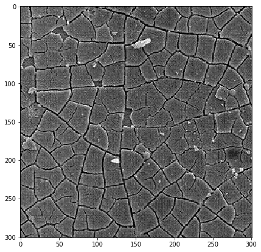
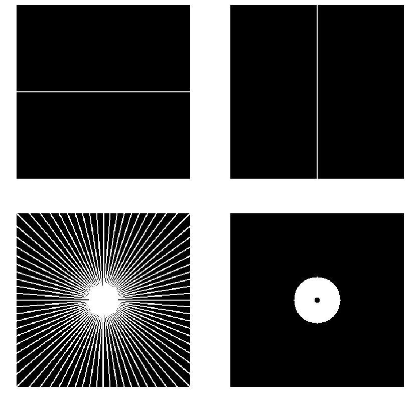
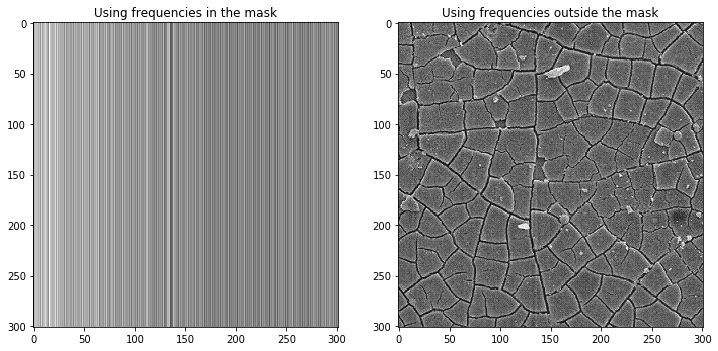
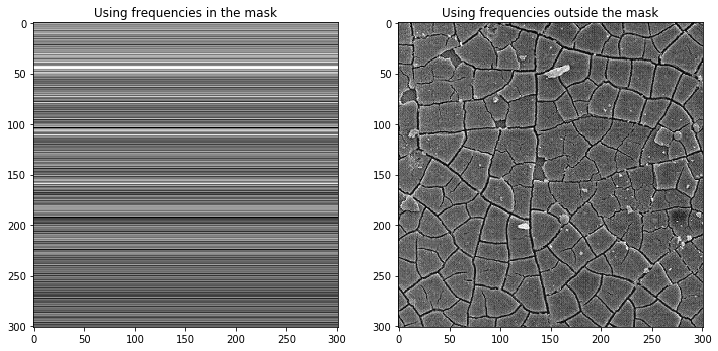
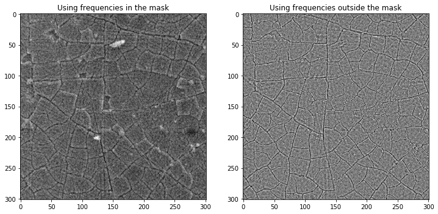
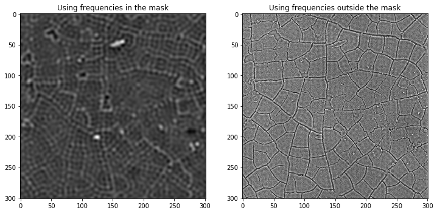

Fourier Masking¶
[1]:
import numpy as np
import matplotlib.pyplot as plt
import pandas as pd
from PIL import Image
from imagemks.rw import listload
from imagemks.masking import maskfourier
from imagemks.structures import donut, wheel
Loading a Microstructure Image¶
[2]:
path_to_data = '/home/sven/Projects/ImageMKS/examples/figs/'
loader = listload(path_to_data)
[3]:
A = loader[0].crop(box=(0,0,301,301))
[4]:
A = np.array(A)
A = A[:,:,0]
plt.figure(figsize=(7,7))
plt.imshow(A, cmap='gray')
plt.show()

Masks¶
[5]:
mask_x = np.zeros(A.shape).astype(np.bool_)
mask_x[A.shape[0]//2,:] = True
mask_y = np.zeros(A.shape).astype(np.bool_)
mask_y[:,A.shape[0]//2] = True
mask_wheel = wheel(20, 1, size=A.shape)
mask_donut = donut(40,5, size=A.shape)
fig, axs = plt.subplots(2,2,figsize=(14,14))
for i, (ax, im) in enumerate(zip(axs.ravel(), (mask_x, mask_y, mask_wheel, mask_donut))):
ax.imshow(im, cmap='gray')
ax.axis('off')
plt.show()

X Frequency Mask¶
The image on the left shows the intensity changes along the x direction.
[6]:
A_in, A_out = maskfourier(A, mask_x)
fig, axs = plt.subplots(1,2,figsize=(12,6))
axs[0].imshow(A_in, cmap='gray')
axs[0].set_title('Using frequencies in the mask')
axs[1].imshow(A_out, cmap='gray')
axs[1].set_title('Using frequencies outside the mask')
plt.show()

Y Frequency Mask¶
The left image shows the intensity changes along the y orientation.
[7]:
A_in, A_out = maskfourier(A, mask_y)
fig, axs = plt.subplots(1,2,figsize=(12,6))
axs[0].imshow(A_in, cmap='gray')
axs[0].set_title('Using frequencies in the mask')
axs[1].imshow(A_out, cmap='gray')
axs[1].set_title('Using frequencies outside the mask')
plt.show()

Many oriented frequencies mask (Wheel)¶
Here the right image clearly shows what frequencies we have removed.
[8]:
A_in, A_out = maskfourier(A, mask_wheel)
fig, axs = plt.subplots(1,2,figsize=(12,6))
axs[0].imshow(A_in, cmap='gray')
axs[0].set_title('Using frequencies in the mask')
axs[1].imshow(A_out, cmap='gray')
axs[1].set_title('Using frequencies outside the mask')
plt.show()

Masking only frequencies within a range.¶
Here low and high frequencies are removed. The image on the right shows the low frequency (long range shadows and intensity variations) and high frequeny (noise) signals removed from the image on the left.
[9]:
A_in, A_out = maskfourier(A, mask_donut)
fig, axs = plt.subplots(1,2,figsize=(12,6))
axs[0].imshow(A_in, cmap='gray')
axs[0].set_title('Using frequencies in the mask')
axs[1].imshow(A_out, cmap='gray')
axs[1].set_title('Using frequencies outside the mask')
plt.show()
